Crear Tus Propios Trucos
Como CREAR tus Propios TRUCOS para PS4 con un computador y nuestra ps4 podemos buscar y crear trucos para nuestros juegos favoritos.
Para esta Guia
Requisitos para este tutorial
- PC o Notebook con Windows 7, 8, 8.1, 10
- Para descomprimir archivos .rar o .zip
Programas para este Tutorial
| Archivos | Servidores | |
|---|---|---|
| Crear Trucos | Mega | |
Para Empezar este Tutorial
- Descargamos los archivos
- Descomprimimos el archivo .rar o .zip
- PS4.Games.Reaper.rar
- Con la última versión disponible
- Una vez descargado nuestro archivo
- Lo extraemos y ejecutamos
- Antes de abrir el juego para buscar los trucos
- Activamos en nuestra consola PS4debug con nuestra Web de preferencia 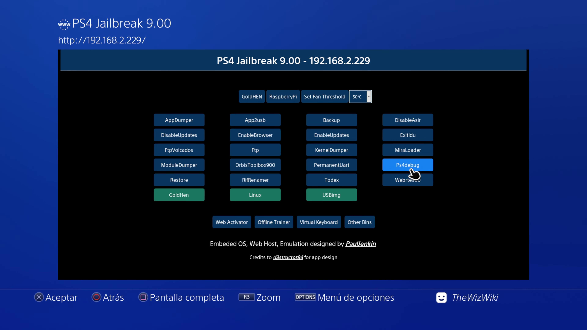
- Anotar la ip de nuestra consola para el programa
- Abrimos cualquier juego para buscarle los trucos y abrimos el programa 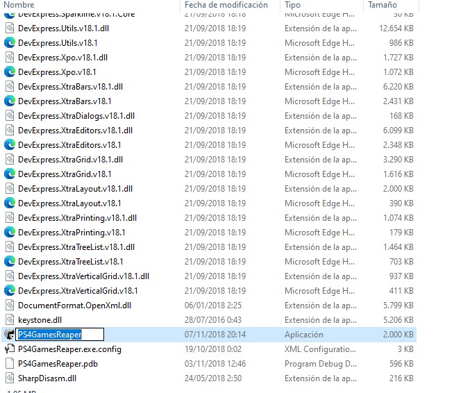 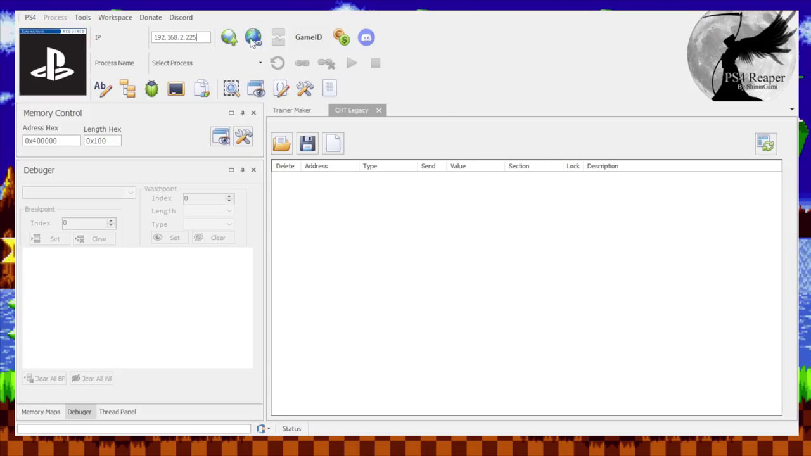
- Colocamos la IP y le damos al Mundo con cadena y nos conectaría con nuestra PS4 y nos mostrar el juego que tenemos ejecutando 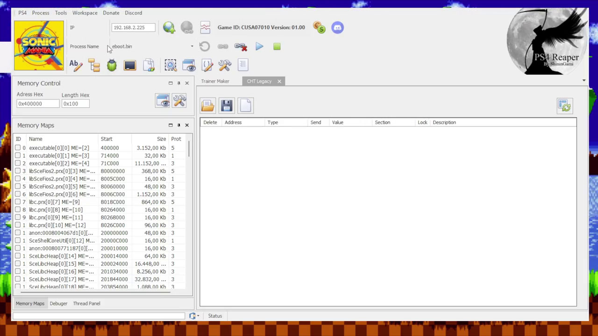
- Si nos detecta el eboot.bin lo podemos buscar manual mente
- Para buscar el truco vamos a dale a la Lupa y dentro de la ventana le damos al Select All para buscar en todos los procesos y todo lo que sea numero lo buscamos en 4 bytes y colocamos el numero a buscar y le damos al Boton First Scan 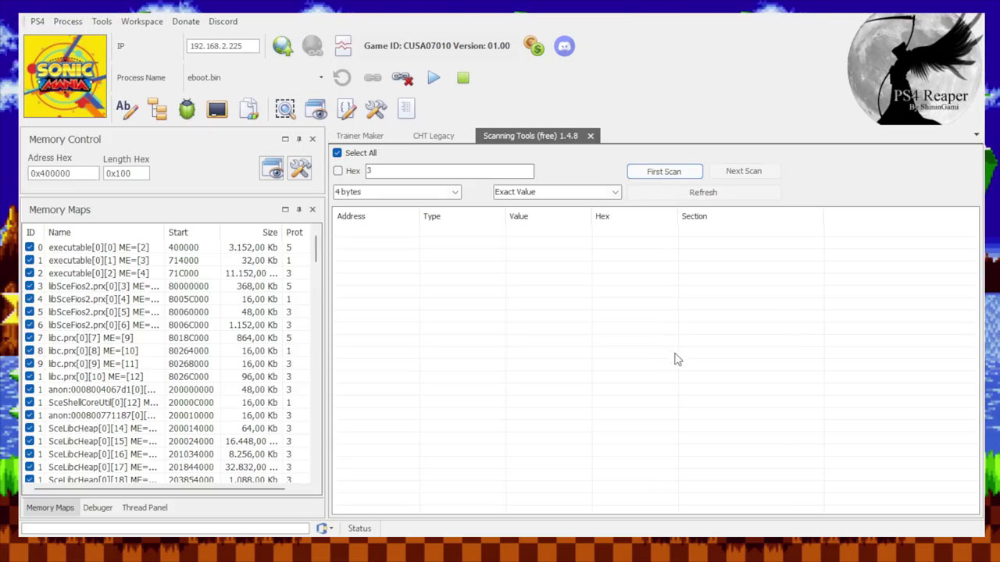
- Cuando termine de buscar en la memoria vamos al juego cambiamos el numero que estamos buscando y le damos al Boton Next Scan para volver a buscar dentro de la lista 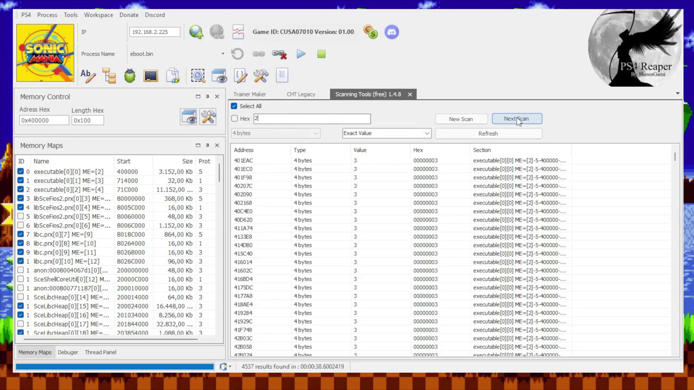
- Y esperamos que termine si nos encuentra pocos resultados podemos seguir con el siguiente paso, pero si tenemos mucho podemos volver a cambiar el numero que estamos buscando y volver a escanear
- Ya cuando tengamos pocos le damos al primer resultado doble clip y donde dice Value le cambiamos el valor por el que queramos 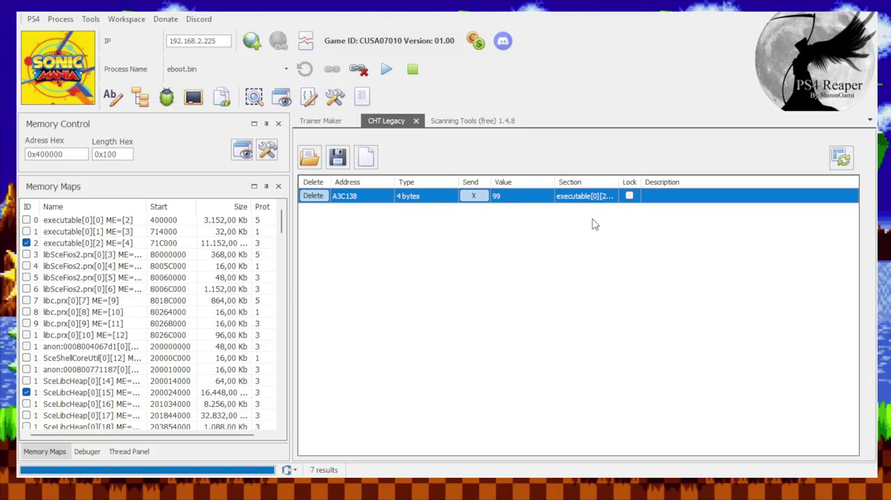
- Volvemos a nuestra consola para ver si se cambió el número que estábamos buscando 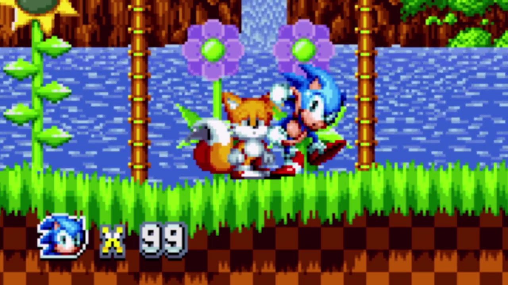
- Si el numero no cambio repetimos los pasos anteriores con el segundo en la lista así hasta encontrar cual cambie el valor en nuestro juego
- Cuando lo tengamos listo podemos darle a la opción Lock para dejarlo permanente el valor 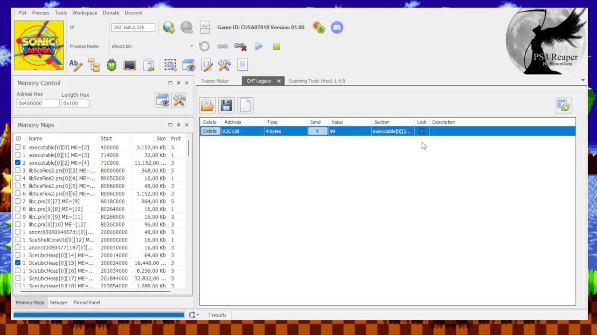
- Para compartir nuestro truco encontrado con otro amigo copiamos el valor Address y abrimos las dos hojas (CHT Legacy) 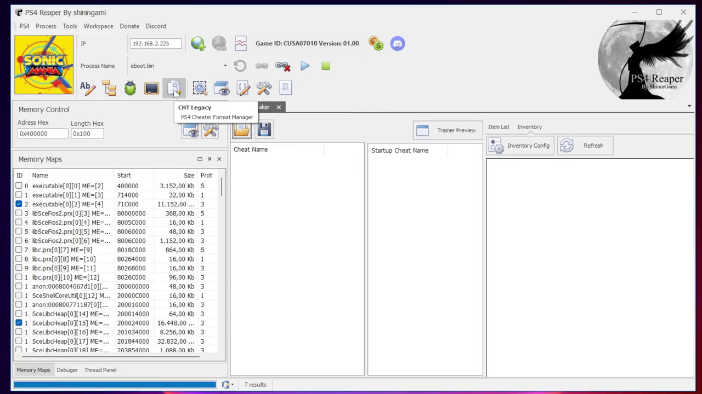
- Si no estuviera el valor que encontramos podemos darle a NewAddress pegar el valor que copiamos y completar los datos que nos piden y darle a guardar 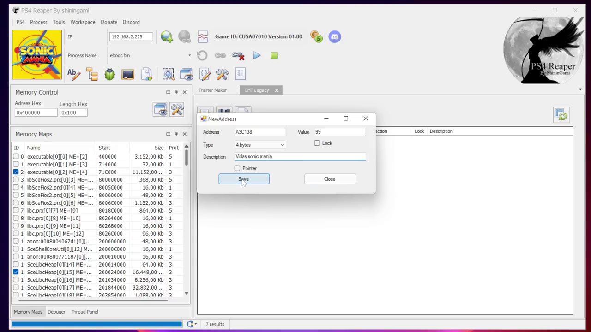
- Después le podemos dar al disque para guardar el truco encontrado con formato .cht
- Y Listo
×